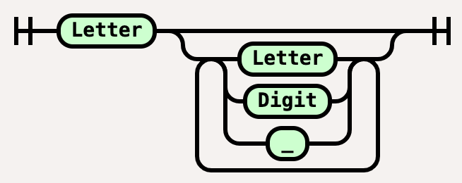
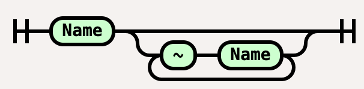
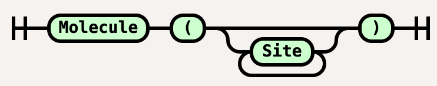

| Visualize BNGL | BNGL overview | Rules Railroad Concept | Visualizing conventions | Examples | About |
Rule-based languages such as BNGL (BioNetGen Language) consists of symbolic sentences describing molecules, species, observables,
reaction rules, and other parts of BNGL file.
The grammar for BNGL was described by Faeder in
Extended Backus-Naur Form (EBNF).
Simplified description of BNGL grammar in EBNF
(with compartments and matching omitted) looks like:
Name = Letter, [{Letter|Digit|"_"}];
State = “~",(Letter|Digit),[{Letter|Digit|"_"}] | "~";
Site = Name, [{"~",State}];
Molecule = Name, ["(",[Site,[{",",Site}]],")"];
This description is difficult to follow, so syntax diagrams
(also called railroad diagrams) were introduced.
The name declaration is



Using this approach, we extended the railroad diagrams to describe specific elements of rule-based description.